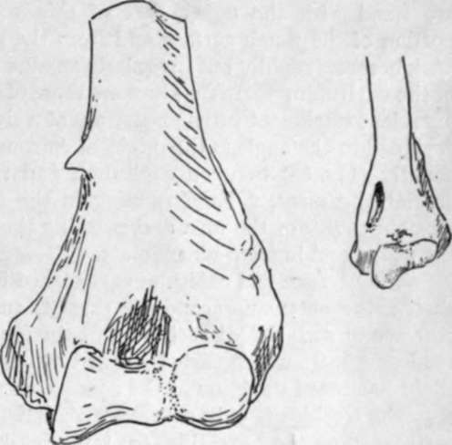

Condyles
Description
This section is from the book "The Anatomy Of The Human Skeleton", by J. Ernest Frazer. Also available from Amazon: The anatomy of the human skeleton.
Condyles
Inner condyle (or epicondyle) is the more prominent, in an inward and backward direction,* though the outer supracondylar ridge is better marked and sharper than the inner. Two surfaces are visible (Fig. 68) on the inner prominence when looked at from the front : one is antero-internal, and is for the superficial flexor muscles of the forearm, while the other extends along the whole length of the lower aspect, and marks the attachment of the internal lateral ligament. The most anterior fibres of this ligament are those that arise from the extreme mesial end of this lower facet and are therefore the most superficial, and it is on to this that the Flexor Sublimis extends from its humeral origin, which is from the deepest part of the upper facet, to reach its ulnar origin on the coronoid process (see Fig. 77).
Immediately above the upper part and close to the supracondylar ridge is the origin of Pronator teres. This is not a rounded origin, but has an area in the shape of an elongated and narrow triangle with base downwards, which can be easily seen on the bone, marked out by the diverging lines produced by the thin aponeurotic covering. The internal brachial ligament of Struthers is attached to the tip of the process behind the lower end of the pronator origin.
This is a thin fibrous cord attached above to the coracoid process, and possibly represents the lower portion of the Coraco-brachialis sheet : it may be connected with the internal septum or with the supracondylar process if this is present. The supracondylar process (Fig. 69) is found now and then, and is a hook-like point of bone continuous with a fibrous band, from which the Pronator teres may arise and under which the median nerve and brachial artery may run : it is looked on as an atavistic structure, representing the front wall of the bony foramen found normally in carnivora and some other animals and transmitting the nerve and artery.
* It may be pointed out here, as a fact of some surgical importance, that the inner condyle points in the same inward and backward direction as the head of the bone.
Fig. 69.- 1, Humerus with supracondylar process. 2, Humerus of cat, showing the supracondylar foramen for nerve and artery.
The concavity on the back of the condyle contains the ulnar nerve and inferior profunda artery. Observe that, owing to the disposition of the front fibres along the lower border of the condyle, the internal lateral ligament has a sort of concavity or groove on its superficial posterior aspect, opening out to the forearm, and the groove on the back of the condyle leads the nerve into this, so that it enters the forearm on the internal ligament, behind the anterior fibres. This portion of the bone on which the nerve hes is formed by an extension of ossification from the shaft, so cutting off the epiphysis of the epicondyle from the three centres that form the " epiphysis of the lower end " (Fig. 64).
The external condyle (Fig. 68) has a rough surface looking outwards for the external lateral ligament of the elbow: the superficial extensors of the forearm are fused with the upper part of this, and so take origin here from the upper portion of the rough surface and from the point of bone above. The surface traced back becomes rapidly but irregularly smaller in area, being only hnear along the margin of the capitulum where the fibres are those of the posterior capsule : from this the line of capsular attachment turns up sharply at a right angle along the margin of the trochlea. Included in the angle is the origin of Anconeus, while the point of the angle projects slightly (Fig. 68) between capitulum and trochlea, marking the attachment of the cruciate ligament, a band running in the capsule to the back margin of the lesser sigmoid cavity of the ulna and marking the remnant of the original division between the radial and humero-ulnar joints.
The trochlea and capitulum are placed in a plane somewhat in front of that of the shaft : the outer supracondylar ridge is turned forward with the condylar mass to correspond with this disposition, but the inner ridge, though it shows a slight forward tendency in its upper part, is turned rather backwards below in conformity with the slight backward direction of the condyle on to which it is continued.
The trochlea is only covered with articular cartilage over part of its extent, as is easily seen on the bone (Fig. 63) : its cartilage-covered surface is broadest behind, in accordance with the comparative breadth of the olecranon that articulates with it here. When, therefore, the forearm is flexed, the broad olecranon overlaps by its outer border the inner part of the capitulum, and the ulna tends to move radialwards, moreover, as a result of the disposition of the surface of the trochlea.
The inner part of the trochlea is deeper than the outer, so that the axis of the whole surface made up of these two parts is set obhquely across the vertical axis of the shaft. The result of this is seen when the forearm is extended to the full and it is apparent that the line of the forearm does not coincide with that of the arm : the angle is modified by various factors in the forearm, but that made between the axes of trochlea and humerus is about 105 degrees in male and 108 degrees in female bones.
The inner vertical surface of the trochlea is covered bv synovial membrane and has no ligamentous fibres attached to it , in fact the whole structure might be described as intra-articular in position.
* The capitulum is altogether covered by hyaline cartilage, and is spheroidal to permit of a gliding movement of the head of the radius during flexion and extension, and a rotating movement of the head on it during pronation and supination. Its centre is the first to appear at the lower end of the bone.
The upper end of the bone hes below and, for its greater part, external to and in front of the end of the acromion, and can be appreciated by the fingers through the Deltoid. In a thin arm it is possible to feel the small tuberosity through the anterior fibres of this muscle : when the arm is hanging by the side, the bicipital groove lies vertically below the tip of the acromion, but, by eversion of the arm, this groove and its tendon is carried out (away from the short head, which is fixed to the coracoid process) and the small tuberosity becomes apparent, covered of course by the Subscapularis tendon. The articular head can be felt through this tendon by passing the fingers up into the axilla, and its direction and continuity with the rest of the bone demonstrated by rotation : when there is wasting of the muscles, the relation of the head to the line of the axillary border of the scapula can also be appreciated. Examine from the front, by rotating the arm, the position of the head with reference to the coracoid process, which is just internal to it. The shaft of the bone can be palpated better from the sides than from the front or back, owing to the thickness of muscles on these aspects. The shaft is easily felt just below the insertion of the Deltoid, and the external supra-condylar ridge is directly palpable lower down : the inner ridge is not easily examined. The two condyles are evident. Examine their relations to one another, and notice that a line drawn between them has the top of the olecranon on or just above it when the arm is straight, but below it when the elbow is bent : it is placed much nearer the inner condyle. It is possible to examine the back of the bone just above the outer condyle, but not so easily on the inner side.
Continue to: